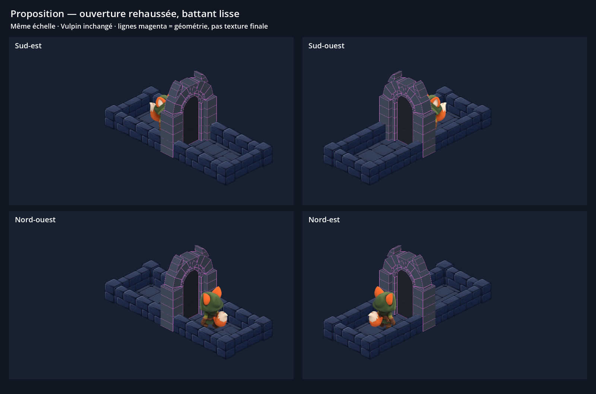
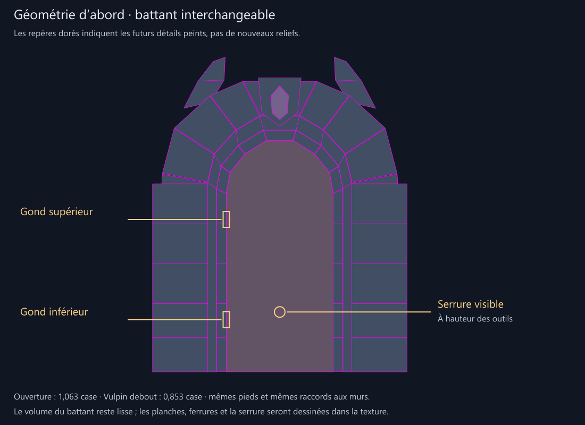

Porte : valider les volumes avant la texture
Proposition de wireframe — pas encore intégrée au jeu.
L’arche est rehaussée pour le Vulpin à sa taille actuelle. La largeur, l’emprise et les raccords bas aux murs restent identiques. Le battant conserve une surface lisse qui pourra recevoir différentes textures.

Quatre orientations natives, même cadrage et même échelle pour l’ancienne et la nouvelle porte. Cliquer pour voir en grand.
Au centre du passage, les 8 poses de marche et les 8 poses de course tiennent dans l’ouverture. La position de la serrure conserve le point de contact actuel des outils. Dans les vues de dos, la maçonnerie masque naturellement une partie du personnage ; « Repères de contact » atténue la porte uniquement pour l’inspection.

Repères d’intention pour la future texture. Aucun bois ni ferrure n’est imposé par la géométrie.
Contrôles : 17 poses complètes du maillage (repos, marche, course) passent dans le profil agrandi ; les 17 dépassent l’ancien profil. Le passage est centré, avec une faible marge latérale. Les 8 poses de crochetage sont contrôlées séparément devant la maçonnerie. Les captures utilisent le rendu et l’ordre des objets de Godot ; elles ne prouvent pas le fonctionnement d’une future animation d’ouverture sur gonds.
Dimensions et raccords · Contrôle du passage · Contrôles des captures · Guide magenta pour la future peinture
Un essai de peinture antérieur à cette validation reste archivé à part. Il n’est ni approuvé, ni utilisé ici. La prochaine étape dépend de la validation du wireframe.